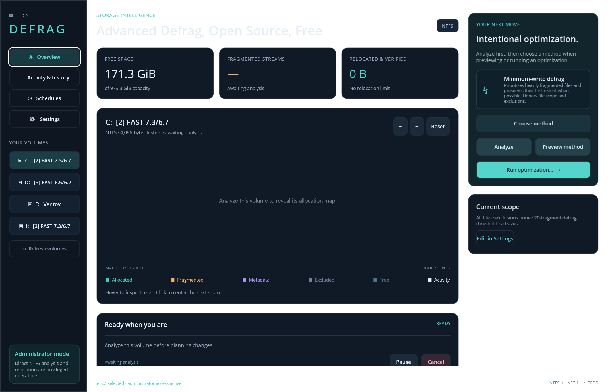

Minimum write
Keep the first extent where possible and move only the fragmented tail.
Windows-first NTFS optimization
See the disk. Choose the method. Preview every move. Tedd.Defrag combines a native dashboard, a scriptable CLI, and a conservative relocation engine in one stand-alone download.
Engineering preview · Windows 10 1809+ · Administrator access required for disk operations
One ZIP. Desktop, CLI, and isolated worker.
Three single files. No .NET installation.
Verified updates. SHA-256 before replacement.
Windows ARM64 ↗A map, not a mystery
The dashboard reveals allocation, fragmentation, metadata, exclusions, and active relocation. Zoom into a region, inspect candidate files, then preview a plan before authorizing writes.

Evidence before motion
Read the NTFS allocation bitmap and validated MFT records. Unsupported or incomplete streams stay ineligible.
Search free intervals in expected O(log n), respect exclusions and budgets, and never recycle a source hole inside the same batch.
Recheck identity, path, attributes, and retrieval pointers immediately before each filesystem-controlled move.
Confirm the destination, journal the outcome, and rescan when native results are ambiguous. Saved cluster addresses are never replayed.
Keep the first extent where possible and move only the fragmented tail.
Make eligible fragmented files contiguous without reorganizing the volume.
Consolidate free space, with optional file defragmentation.
Resend deallocation hints without relocating file data.
Directory, path, size, type, and timestamp-aware placement modes.
Move eligible extents below an explicit partition boundary.
SSD: precision over folklore
For an SSD with TRIM support, Windows defaults to ReTRIM: it resends deallocation hints so unused regions can be purged. Windows’ scheduled optimizer can also perform occasional traditional consolidation on SSD volumes instead of treating “never defrag an SSD” as an absolute rule.
Tedd.Defrag preserves that distinction. Windows automatic delegates to the media-aware OS policy; ReTRIM moves no file data. Custom relocation on SSD or unknown media requires an explicit opt-in, and minimum-write mode exists to bound unnecessary movement.
Inspectable by design
The scanner is read-only. Relocation uses documented Windows filesystem controls. Requests, plans, progress, and benchmarks are inspectable; the code and GPL-3.0 license are public.
Read the source on GitHub ↗Stand-alone Windows release
Extract anywhere. Run Desktop or CLI. Updates are offered in place and never installed silently.